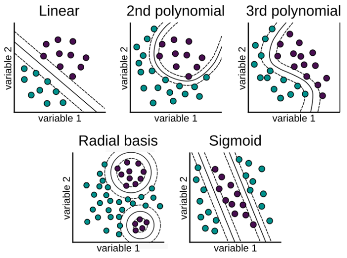
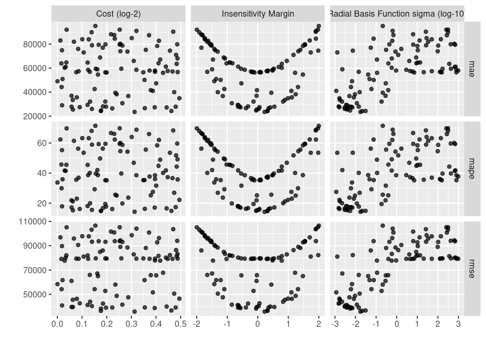

Capítulo 3 Support Vector Machine (SVM / SVR)
Es común encontrar en la literatura el nombre de SVM para referirse tanto al caso de regresión como al de clasificación, no obstante, SVR se refiere particularmente a Suport Vector Regression.
Support vector machine, llamado SVM, es un algoritmo de aprendizaje supervisado que se puede utilizar para problemas de clasificación y regresión. Se utiliza para conjuntos de datos más pequeños, ya que tarda demasiado en procesarse.
El principal objetivo de esta técnica es encontrar el Hiperplano de Separación Óptima, también conocido como Boundary Decision, el cual será el margen de clasificación más grande que podamos ajustar para separar a las clases involucradas, limitando las veces que una observación viola dicho margen.
Para entender este algoritmo es necesario entender 3 conceptos principales:
Maximum margin classifiers
Support vector classifiers
Support vector machines
Estudiemos cada uno de estos principios.
3.1 Maximum Margin Classifier
A menudo se generalizan con máquinas de vectores de soporte, pero SVM tiene muchos más parámetros en comparación. El clasificador de margen máximo considera un hiperplano con ancho de separación máxima para clasificar los datos. Sin embargo, se pueden dibujar infinitos hiperplanos en un conjunto de datos por lo que es importante elegir el hiperplano ideal para la clasificación.
En un espacio n-dimensional, un hiperplano es un subespacio de la dimensión n-1. Es decir, si los datos tienen un espacio bidimensional, entonces el hiperplano puede ser una línea recta que divide el espacio de datos en dos mitades y pasa por la siguiente ecuacion:
\[\beta_0 + \beta_1X_1 + \beta_2X_2=0\]
Las observaciones que caen en el hiperplano sigue la ecuación anterior. Las observaciones que caen en la región por encima o por debajo del hiperplano sigue las siguientes ecuaciones:
\[\beta_0 + \beta_1X_1 + \beta_2X_2>0\]
\[\beta_0 + \beta_1X_1 + \beta_2X_2<0\]
El clasificador de margen máximo a menudo falla en la situación de casos no separables en los que no puede asignar un hiperplano diferente para clasificar datos no separables. Para tales casos, un clasificador de vectores de soporte viene al rescate.

Del diagrama anterior, podemos suponer infinitos hiperplanos (izquierda). El clasificador de margen máximo viene con un solo hiperplano que divide los datos como en la gráfica de la derecha. Los datos que tocan los hiperplanos positivo y negativo se denominan vectores de soporte.
3.2 Support Vector Classifiers
Los vectores de soporte son las observaciones que están más cerca del hiperplano e influyen en la posición y orientación del hiperplano. Este tipo de clasificador puede considerarse como una versión extendida del clasificador de margen máximo. Cuando tratamos con datos de la vida real, encontramos que la mayoría de las observaciones están en clases superpuestas. Es por eso que se implementan clasificadores de vectores de soporte.
Usando estos vectores de soporte, maximizamos el margen del clasificador. Eliminar los vectores de soporte cambiará la posición del hiperplano. Estos son los puntos que nos ayudan a construir nuestro SVM. Consideremos un parámetro de ajuste C. Entendamos con el siguiente diagrama.
Podemos ver en el gráfico de la izquierda que los valores más altos de C generaron más errores que se consideran una violación o infracción. El diagrama de la derecha muestra un valor más bajo de C y no brinda suficientes posibilidades de infracción al reducir el ancho del margen.
Puede considerarse al parámetro C como el monto de regularización, tal que:
Si C es bajo, el margen será más amplio y tendremos un mayor número de violaciones al margen, pero el modelo generalizará mejor
Si C es alto, nuestro margen será menos amplio y tendrá menos violaciones. Sin embargo, no generalizará bien.
Este modelo es sensible a cambios en la escala de datos de entrada, por lo que será importante estandarizar las variables antes de usar este modelo.
3.3 Support Vector Machine
El enfoque de la máquina de vectores de soporte se considera durante una decisión no lineal y los datos no son separables por un clasificador de vectores de soporte, independientemente de la función de costo.
Cuando es casi imposible separar clases de manera no lineal, aplicamos el truco llamado truco del kernel el cual ayuda a manejar la separación de los datos.

En el gráfico anterior, los datos que eran inseparables en una dimensión se separaron una vez que se transformaron a un espacio de dos dimensiones después de aplicar una transformación mediante kernel polinomial de segundo grado. Ahora veamos cómo manejar los datos bidimensionales linealmente inseparables.

En datos bidimensionales, el núcleo polinomial de segundo grado se aplica utilizando un plano lineal después de transformarlo a dimensiones superiores.
3.4 El truco del Kernel
Las funciones Kernel son métodos con los que se utilizan clasificadores lineales como SVM para clasificar puntos de datos separables no linealmente. Esto se hace representando los puntos de datos en un espacio de mayor dimensión que su original. Por ejemplo, los datos 1D se pueden representar como datos 2D en el espacio, los datos 2D se pueden representar como datos 3D, etcétera.
El truco del kernel ofrece una forma de calcular las relaciones entre los puntos de datos utilizando funciones del kernel y representar los datos de una manera más eficiente con menos cómputo. Los modelos que utilizan esta técnica se denominan “modelos kernelizados”.

Hay varias funciones que utiliza SVM para realizar esta tarea. Algunos de los más comunes son:
- El núcleo lineal: Se utiliza para datos lineales. Esto simplemente representa los puntos de datos usando una relación lineal.
\[K(x, y)=(x^T \cdot y)\] \[f(x)=w^T \cdot x + b\] Esta formulación se presenta como solución al problema de optimización sobre w:
\[min_{w\in R^d} \frac{1}{2}\parallel w \parallel ^2+ C\sum_{i}^{N}{max(0, 1-y_i f(x_i))}\] \[s.a. \quad y_i f(x_i) \geq 1 - max(0, 1-y_i f(x_i))\] En donde \(1-y_i f(x_i)\) es la distancia de \(x_i\) al correspondiente margen de la clase si \(x_i\) se encuentra en el lado equivocado del margen y cero en caso contrario. De esta forma, los puntos que se encuentran lejos del margen del lado equivocado obtendrán una mayor penalización. Dar click en la siguiente liga para mayor entendimiento del problema de optimización.
- Función de núcleo polinomial: Transforma los puntos de datos mediante el uso del producto escalar y la transformación de los datos en una “dimensión n,” n podría ser cualquier valor de 2, 3, etcétera, es decir, la transformación será un producto al cuadrado o superior. Por lo tanto, representar datos en un espacio de mayor dimensión utilizando los nuevos puntos transformados.
\[K(x, y)=(c+ x^T \cdot y)^p\]
Cuando se emplea \(p=1\) y \(c=0\), el resultado es el mismo que el de un kernel lineal. Si \(p>1\), se generan límites de decisión no lineales, aumentando la no linealidad a medida que aumenta p. No suele ser recomendable emplear valores de p mayores 5 por problemas de overfitting.

- La función de base radial (RBF): Esta función se comporta como un “modelo de vecino más cercano ponderado.” Transforma los datos representándolos en dimensiones infinitas,
La función Radial puede ser de Gauss o de Laplace. Esto depende de un hiperparámetro conocido como gamma \(\gamma\). Cuanto menor sea el valor del hiperparámetro, menor será el sesgo y mayor la varianza. Mientras que un valor más alto de hiperparámetro da un sesgo más alto y menor varianza. Este es el núcleo más utilizado.
\[K(x, y)=exp(-\gamma \parallel x - y\parallel^2)=exp(-\frac{\parallel x-y \parallel ^2}{2\sigma²})\] \[f(x)=w^T \cdot \phi(x) + b\] Se realiza un mapeo de x a \(\phi(x)\) en donde los datos son separables

Es recomendable probar el kernel RBF. Este kernel tiene dos ventajas: que solo tiene dos hiperparámetros que optimizar (\(\gamma\) y la penalización \(C\) común a todos los SVM) y que su flexibilidad puede ir desde un clasificador lineal a uno muy complejo.
- La función sigmoide: También conocida como función tangente hiperbólica (Tanh), encuentra más aplicación en redes neuronales como función de activación. Esta función mapea los valores de entrada al intervalo [-1, 1].
\[K(x, y)= tanh(\kappa x\cdot y-\delta)\]
¿Por qué se llama un “truco del kernel?”
SVM vuelve a representar los puntos de datos no lineales utilizando cualquiera de las funciones del kernel de una manera que parece que los datos se han transformado, luego encuentra el hiperplano de separación óptimo, sin embargo, en realidad, los puntos de datos siguen siendo los mismos, en realidad no se han transformado. Es por eso que se llama un ‘truco del kernel.’
3.5 Support Vector Regression
El problema de la regresión es encontrar una función que aproxime la relación de un dominio de datos de entrada a números reales con base en una muestra de entrenamiento. Veamos cómo funciona SVR en realidad.

Consideremos las dos líneas rojas como el límite de decisión y la línea verde como el hiperplano. Nuestro objetivo, cuando avanzamos con SVR, es básicamente considerar los puntos que están dentro de la línea límite de decisión. Nuestra línea de mejor ajuste es el hiperplano que tiene un número máximo de puntos.
Lo primero que entenderemos será el límite de decisión. Consideremos estas líneas como si estuvieran a cualquier distancia, digamos ‘a,’ del hiperplano. Entonces, estas son las líneas que dibujamos a la distancia ‘+a’ y ‘-a’ del hiperplano. Esta ‘a’ en el texto se conoce básicamente como épsilon y representa el margen.
Suponiendo que la ecuación del hiperplano es la siguiente:
\[Y_i = W^TX + b\] Entonces estas ecuaciones se transforman en la siguiente forma:
\(W^TX + b = +a\)
\(W^TX + b = -a\)
Por lo tanto, cualquier hiperplano que satisfaga nuestra SVR debería satisfacer: \(-a < Y- WX+b < +a\)
Nuestro objetivo principal aquí es decidir un límite de decisión a una distancia ‘a’ del hiperplano original, de modo que los puntos de datos más cercanos al hiperplano o los vectores de soporte estén dentro de esa línea límite.
Vamos a tomar solo aquellos puntos que están dentro del límite de decisión y tienen la menor tasa de error, o están dentro del margen de tolerancia. Esto nos da un mejor modelo de ajuste.
3.6 Ventajas y desventajas
Ventajas
Es un modelo que ajusta bien con pocos datos
Son flexibles en datos no estructurados, estructurados y semiestructurados.
La función Kernel alivia las complejidades en casi cualquier tipo de datos.
Se observa menos sobreajuste en comparación con otros modelos.
Desventajas
El tiempo de entrenamiento es mayor cuando se calculan grandes conjuntos de datos.
Los hiperparámetros suelen ser un desafío al interpretar su impacto.
La interpretación general es difícil (black box).
3.7 Ajuste del modelo con R
Usaremos las recetas antes implementadas para ajustar tanto el modelo de regresión como el de clasificación. Exploraremos un conjunto de hiperparámetros para elegir el mejor modelo.
Recordemos los pasos a seguir al ajustar un modelo
- Separación inicial de datos ( test, train
) - Pre-procesamiento e ingeniería de variables
- Selección de tipo de modelo con hiperparámetros iniciales
- Inicialización de workflow o pipeline
- Creación de grid search
- Entrenamiento de modelos con hiperparámetros definidos (salvar los modelos entrenados)
- Análisis de métricas de error e hiperparámetros (Vuelve al paso 3, si es necesario)
- Selección de modelo a usar
- Ajuste de modelo final con todos los datos (Vuelve al paso 2, si es necesario)
- Validar poder predictivo con datos de prueba.
3.7.1 Implementación de SVR en R
A continuación, revisaremos paso por paso este procedimiento usando SVM como modelo. Los datos corresponden a nuestro ya conocido problema predictivo de precio de casas. Se puede encontrar los datos y documentación en el siguiente enlace
Paso 1: Separación inicial de datos ( test, train
library(tidymodels)
data(ames)
set.seed(4595)
ames_split <- initial_split(ames, prop = 0.75)
ames_train <- training(ames_split)
ames_test <- testing(ames_split)
ames_folds <- vfold_cv(ames_train)Contando con datos de entrenamiento, procedemos a realizar el feature engineering para extraer las mejores características que permitirán realizar las estimaciones en el modelo.
Paso 2: Pre-procesamiento e ingeniería de variables
receta_casas <- recipe(Sale_Price ~ . , data = ames_train) %>%
step_unknown(Alley) %>%
step_rename(Year_Remod = Year_Remod_Add) %>%
step_rename(ThirdSsn_Porch = Three_season_porch) %>%
step_ratio(Bedroom_AbvGr, denom = denom_vars(Gr_Liv_Area)) %>%
step_mutate(
Age_House = Year_Sold - Year_Remod,
TotalSF = Gr_Liv_Area + Total_Bsmt_SF,
AvgRoomSF = Gr_Liv_Area / TotRms_AbvGrd,
Pool = if_else(Pool_Area > 0, 1, 0),
Exter_Cond = forcats::fct_collapse(Exter_Cond, Good = c("Typical", "Good", "Excellent"))) %>%
step_relevel(Exter_Cond, ref_level = "Good") %>%
step_normalize(all_predictors(), -all_nominal()) %>%
step_dummy(all_nominal()) %>%
step_interact(~ Second_Flr_SF:First_Flr_SF) %>%
step_interact(~ matches("Bsmt_Cond"):TotRms_AbvGrd) %>%
step_rm(
First_Flr_SF, Second_Flr_SF, Year_Remod,
Bsmt_Full_Bath, Bsmt_Half_Bath,
Kitchen_AbvGr, BsmtFin_Type_1_Unf,
Total_Bsmt_SF, Kitchen_AbvGr, Pool_Area,
Gr_Liv_Area, Sale_Type_Oth, Sale_Type_VWD
) %>%
prep()
receta_casas## Recipe
##
## Inputs:
##
## role #variables
## outcome 1
## predictor 73
##
## Training data contained 2197 data points and no missing data.
##
## Operations:
##
## Unknown factor level assignment for Alley [trained]
## Variable renaming for Year_Remod [trained]
## Variable renaming for ThirdSsn_Porch [trained]
## Ratios from Bedroom_AbvGr, Gr_Liv_Area [trained]
## Variable mutation for ~Year_Sold - Year_Remod, ~Gr_Liv_Area + To... [trained]
## Re-order factor level to ref_level for Exter_Cond [trained]
## Centering and scaling for Lot_Frontage, Lot_Area, Year_Built, Year_Remod,... [trained]
## Dummy variables from MS_SubClass, MS_Zoning, Street, Alley, Lot_Shape, Land_Co... [trained]
## Interactions with Second_Flr_SF:First_Flr_SF [trained]
## Interactions with (Bsmt_Cond_Fair + Bsmt_Cond_Good + Bsmt_Cond_No_Ba... [trained]
## Variables removed First_Flr_SF, Second_Flr_SF, Year_Remod, Bsmt_Full_Bath... [trained]Recordemos que la función recipe() solo son los pasos a seguir, necesitamos usar la función prep() que nos devuelve una receta actualizada con las estimaciones y la función juice() que nos devuelve la matriz de diseño.
Una vez que la receta de transformación de datos está lista, procedemos a implementar el pipeline del modelo de interés. Existen diversas funciones dentro de tidymodels para implementar estos modelos, entra las cuales se encuentran:
- Base lineal: svm_lineal()
- Base polinomial: svm_poly()
- Base radial: svm_rbf()
Paso 3: Selección de tipo de modelo con hiperparámetros iniciales
svm_model <- svm_rbf(
mode = "regression",
cost = tune(),
rbf_sigma = tune(),
margin = tune()) %>%
set_engine("kernlab")
svm_model## Radial Basis Function Support Vector Machine Specification (regression)
##
## Main Arguments:
## cost = tune()
## rbf_sigma = tune()
## margin = tune()
##
## Computational engine: kernlabPaso 4: Inicialización de workflow o pipeline
svm_workflow <- workflow() %>%
add_recipe(receta_casas) %>%
add_model(svm_model)
svm_workflow## ══ Workflow ════════════════════════════════════════════════════════════════════
## Preprocessor: Recipe
## Model: svm_rbf()
##
## ── Preprocessor ────────────────────────────────────────────────────────────────
## 11 Recipe Steps
##
## • step_unknown()
## • step_rename()
## • step_rename()
## • step_ratio()
## • step_mutate()
## • step_relevel()
## • step_normalize()
## • step_dummy()
## • step_interact()
## • step_interact()
## • ...
## • and 1 more step.
##
## ── Model ───────────────────────────────────────────────────────────────────────
## Radial Basis Function Support Vector Machine Specification (regression)
##
## Main Arguments:
## cost = tune()
## rbf_sigma = tune()
## margin = tune()
##
## Computational engine: kernlabPaso 5: Creación de grid search
svm_parameters_set <- svm_workflow %>%
hardhat::extract_parameter_set_dials() %>%
update(
cost = cost(c(0, 0.5)),
rbf_sigma = rbf_sigma(c(-3, 3)),
margin = svm_margin(c(-2, 2))
)
set.seed(123)
svm_grid <- svm_parameters_set %>%
grid_max_entropy(size = 100)
svm_grid## # A tibble: 100 × 3
## cost rbf_sigma margin
## <dbl> <dbl> <dbl>
## 1 1.22 0.504 0.571
## 2 1.41 1.22 0.329
## 3 1.33 0.111 1.38
## 4 1.35 0.0935 -1.65
## 5 1.04 0.937 1.48
## 6 1.14 0.0154 -1.91
## 7 1.39 70.2 -1.98
## 8 1.07 1.16 -0.487
## 9 1.17 1.34 0.948
## 10 1.02 0.0303 0.230
## # … with 90 more rowsctrl_grid <- control_grid(save_pred = T, verbose = T)Paso 6: Entrenamiento de modelos con hiperparámetros definidos
library(doParallel)
UseCores <- detectCores() - 1
cluster <- makeCluster(UseCores)
registerDoParallel(cluster)
svm1 <- Sys.time()
svm_tune_result <- tune_grid(
svm_workflow,
resamples = ames_folds,
grid = svm_grid,
metrics = metric_set(rmse, mae, mape),
control = ctrl_grid
)
svm2 <- Sys.time(); svm2 - svm1
stopCluster(cluster)
svm_tune_result %>% saveRDS("models/svm_model_reg.rds")Podemos obtener las métricas de cada fold con el siguiente código:
svm_tune_result <- readRDS("models/svm_model_reg.rds")
unnest(svm_tune_result, .metrics)## # A tibble: 3,000 × 11
## splits id cost rbf_sigma margin .metric .estimator .estimate
## <list> <chr> <dbl> <dbl> <dbl> <chr> <chr> <dbl>
## 1 <split [1977/220]> Fold01 1.04 0.00515 0.543 rmse standard 41851.
## 2 <split [1977/220]> Fold01 1.04 0.00515 0.543 mae standard 29737.
## 3 <split [1977/220]> Fold01 1.04 0.00515 0.543 mape standard 19.8
## 4 <split [1977/220]> Fold01 1.12 688. 1.55 rmse standard 98784.
## 5 <split [1977/220]> Fold01 1.12 688. 1.55 mae standard 86126.
## 6 <split [1977/220]> Fold01 1.12 688. 1.55 mape standard 63.4
## 7 <split [1977/220]> Fold01 1.15 0.0145 -0.643 rmse standard 41706.
## 8 <split [1977/220]> Fold01 1.15 0.0145 -0.643 mae standard 28971.
## 9 <split [1977/220]> Fold01 1.15 0.0145 -0.643 mape standard 19.7
## 10 <split [1977/220]> Fold01 1.20 103. -1.51 rmse standard 98356.
## # … with 2,990 more rows, and 3 more variables: .config <chr>, .notes <list>,
## # .predictions <list>Paso 7: Análisis de métricas de error e hiperparámetros (Vuelve al paso 3, si es necesario)
collect_metrics(svm_tune_result)## # A tibble: 300 × 9
## cost rbf_sigma margin .metric .estimator mean n std_err .config
## <dbl> <dbl> <dbl> <chr> <chr> <dbl> <int> <dbl> <chr>
## 1 1.04 0.00515 0.543 mae standard 27905. 10 604. Preprocesso…
## 2 1.04 0.00515 0.543 mape standard 17.2 10 0.579 Preprocesso…
## 3 1.04 0.00515 0.543 rmse standard 39638. 10 1268. Preprocesso…
## 4 1.12 688. 1.55 mae standard 79477. 10 903. Preprocesso…
## 5 1.12 688. 1.55 mape standard 59.3 10 1.23 Preprocesso…
## 6 1.12 688. 1.55 rmse standard 93686. 10 1127. Preprocesso…
## 7 1.15 0.0145 -0.643 mae standard 27913. 10 657. Preprocesso…
## 8 1.15 0.0145 -0.643 mape standard 17.7 10 0.600 Preprocesso…
## 9 1.15 0.0145 -0.643 rmse standard 39121. 10 1424. Preprocesso…
## 10 1.20 103. -1.51 mae standard 78820. 10 912. Preprocesso…
## # … with 290 more rowsEn la siguiente gráfica observamos las distintas métricas de error asociados a los hiperparámetros elegidos:
svm_tune_result %>% autoplot()
svm_tune_result %>% show_best(n = 10, metric = "mape")## # A tibble: 10 × 9
## cost rbf_sigma margin .metric .estimator mean n std_err .config
## <dbl> <dbl> <dbl> <chr> <chr> <dbl> <int> <dbl> <chr>
## 1 1.24 0.0175 0.226 mape standard 14.3 10 0.558 Preprocessor1…
## 2 1.13 0.0211 0.319 mape standard 14.8 10 0.569 Preprocessor1…
## 3 1.38 0.0308 0.320 mape standard 14.9 10 0.574 Preprocessor1…
## 4 1.13 0.00549 -0.0512 mape standard 14.9 10 0.584 Preprocessor1…
## 5 1.04 0.00398 -0.0321 mape standard 15.3 10 0.611 Preprocessor1…
## 6 1.10 0.00303 0.0327 mape standard 15.5 10 0.623 Preprocessor1…
## 7 1.17 0.00383 0.353 mape standard 16.1 10 0.615 Preprocessor1…
## 8 1.06 0.00165 0.0561 mape standard 16.2 10 0.628 Preprocessor1…
## 9 1.28 0.00380 -0.388 mape standard 16.2 10 0.609 Preprocessor1…
## 10 1.36 0.00299 0.409 mape standard 16.6 10 0.619 Preprocessor1…Paso 8: Selección de modelo a usar
# Selección del mejor modelo según la métrica MAPE
svm_regression_best_model <- select_best(svm_tune_result, metric = "mape")
svm_regression_best_model## # A tibble: 1 × 4
## cost rbf_sigma margin .config
## <dbl> <dbl> <dbl> <chr>
## 1 1.24 0.0175 0.226 Preprocessor1_Model075# Selección del modelo más regularizado a menos de una desviación estandar, según la métrica MAPE
svm_regression_best_1se_model <- svm_tune_result %>%
select_by_one_std_err(metric = "mape", "mape")
svm_regression_best_1se_model## # A tibble: 1 × 11
## cost rbf_sigma margin .metric .estimator mean n std_err .config .best
## <dbl> <dbl> <dbl> <chr> <chr> <dbl> <int> <dbl> <chr> <dbl>
## 1 1.13 0.0211 0.319 mape standard 14.8 10 0.569 Preproces… 14.3
## # … with 1 more variable: .bound <dbl>Paso 9: Ajuste de modelo final con todos los datos (Vuelve al paso 2, si es necesario)
# Modelo final
svm_regression_final_model <- svm_workflow %>%
finalize_workflow(svm_regression_best_1se_model) %>%
parsnip::fit(data = ames_train)
svm_regression_final_model## ══ Workflow [trained] ══════════════════════════════════════════════════════════
## Preprocessor: Recipe
## Model: svm_rbf()
##
## ── Preprocessor ────────────────────────────────────────────────────────────────
## 11 Recipe Steps
##
## • step_unknown()
## • step_rename()
## • step_rename()
## • step_ratio()
## • step_mutate()
## • step_relevel()
## • step_normalize()
## • step_dummy()
## • step_interact()
## • step_interact()
## • ...
## • and 1 more step.
##
## ── Model ───────────────────────────────────────────────────────────────────────
## Support Vector Machine object of class "ksvm"
##
## SV type: eps-svr (regression)
## parameter : epsilon = 0.318837530910969 cost C = 1.1300031747186
##
## Gaussian Radial Basis kernel function.
## Hyperparameter : sigma = 0.0210599956279017
##
## Number of Support Vectors : 709
##
## Objective Function Value : -221.4799
## Training error : 0.149207Como hemos hablado anteriormente, este último objeto es el modelo final entrenado, el cual contiene toda la información del pre-procesamiento de datos, por lo que en caso de ponerse en producción el modelo, sólo se necesita de este último elemento para poder realizar nuevas predicciones.
Antes de pasar al siguiente paso, es importante validar que hayamos hecho un uso correcto de las variables predictivas. En este momento es posible detectar variables que no estén aportando valor o variables que no debiéramos estar usando debido a que cometeríamos data leakage. Para enfrentar esto, ayuda estimar y ordenar el valor de importancia del modelo
library(vip)
ames_importance <- svm_regression_final_model %>%
extract_fit_parsnip() %>%
vi(
method = "permute",
nsim = 10,
target = "Sale_Price",
metric = "rmse",
pred_wrapper = kernlab::predict,
train = juice(receta_casas)
)
ames_importance %>% saveRDS("models/vip_ames_svm.rds")ames_importance <- readRDS("models/vip_ames_svm.rds")
ames_importance## # A tibble: 274 × 3
## Variable Importance StDev
## <chr> <dbl> <dbl>
## 1 Year_Built 13445. 595.
## 2 Garage_Area 8866. 409.
## 3 TotRms_AbvGrd 8788. 393.
## 4 Fireplaces 5900. 475.
## 5 Mas_Vnr_Area 5731. 186.
## 6 Full_Bath 4544. 339.
## 7 Garage_Cars 3639. 368.
## 8 Lot_Area 2981. 261.
## 9 Bedroom_AbvGr 2564. 296.
## 10 BsmtFin_SF_1 2425. 156.
## # … with 264 more rowsames_importance %>%
mutate(Variable = forcats::fct_reorder(Variable, Importance)) %>%
slice_max(Importance, n = 20) %>%
ggplot(aes(Importance, Variable, color = Variable)) +
geom_errorbar(aes(xmin = Importance - StDev, xmax = Importance + StDev),
alpha = 0.5, size = 1.3) +
geom_point(size = 3) +
theme(legend.position = "none") +
ggtitle("Variable Importance Measure")Paso 10: Validar poder predictivo con datos de prueba
Imaginemos por un momento que pasa un mes de tiempo desde que hicimos nuestro modelo, es hora de ponerlo a prueba prediciendo valores de nuevos elementos:
# Predicciones
results <- predict(svm_regression_final_model, ames_test) %>%
dplyr::bind_cols(truth = ames_test$Sale_Price) %>%
dplyr::rename(pred_svm_reg = .pred, Sale_Price = truth)
head(results)## # A tibble: 6 × 2
## pred_svm_reg Sale_Price
## <dbl> <int>
## 1 143363. 105000
## 2 183725. 185000
## 3 179908. 180400
## 4 127895. 141000
## 5 217114. 210000
## 6 196308. 216000results %>% yardstick::metrics(Sale_Price, pred_svm_reg)## # A tibble: 3 × 3
## .metric .estimator .estimate
## <chr> <chr> <dbl>
## 1 rmse standard 36200.
## 2 rsq standard 0.798
## 3 mae standard 24681.Es posible definir nuestro propio conjunto de metricas que deseamos reportar creando este objeto:
multi_metric <- metric_set(rmse, rsq, mae, mape, ccc)
multi_metric(results, truth = Sale_Price, estimate = pred_svm_reg) %>%
mutate(.estimate = round(.estimate, 2))## # A tibble: 5 × 3
## .metric .estimator .estimate
## <chr> <chr> <dbl>
## 1 rmse standard 36200.
## 2 rsq standard 0.8
## 3 mae standard 24681.
## 4 mape standard 14.8
## 5 ccc standard 0.89results %>%
ggplot(aes(x = pred_svm_reg, y = Sale_Price)) +
geom_point() +
geom_abline(color = "red") +
xlab("Prediction") +
ylab("Observation") +
ggtitle("Comparisson")3.7.2 Implementación de SVM en R
Es turno de revisar la implementación de SVM con nuestro bien conocido problema de predicción de cancelación de servicios de telecomunicaciones. Los datos se encuentran disponibles en el siguiente enlace:
Los pasos para implementar en R este modelo predictivo son los mismos, cambiando únicamente las especificaciones del tipo de modelo, pre-procesamiento e hiper-parámetros.
library(tidyverse)
library(tidymodels)
library(readr)
telco <- read_csv("data/Churn.csv")
glimpse(telco)## Rows: 7,043
## Columns: 21
## $ customerID <chr> "7590-VHVEG", "5575-GNVDE", "3668-QPYBK", "7795-CFOCW…
## $ gender <chr> "Female", "Male", "Male", "Male", "Female", "Female",…
## $ SeniorCitizen <dbl> 0, 0, 0, 0, 0, 0, 0, 0, 0, 0, 0, 0, 0, 0, 0, 0, 0, 0,…
## $ Partner <chr> "Yes", "No", "No", "No", "No", "No", "No", "No", "Yes…
## $ Dependents <chr> "No", "No", "No", "No", "No", "No", "Yes", "No", "No"…
## $ tenure <dbl> 1, 34, 2, 45, 2, 8, 22, 10, 28, 62, 13, 16, 58, 49, 2…
## $ PhoneService <chr> "No", "Yes", "Yes", "No", "Yes", "Yes", "Yes", "No", …
## $ MultipleLines <chr> "No phone service", "No", "No", "No phone service", "…
## $ InternetService <chr> "DSL", "DSL", "DSL", "DSL", "Fiber optic", "Fiber opt…
## $ OnlineSecurity <chr> "No", "Yes", "Yes", "Yes", "No", "No", "No", "Yes", "…
## $ OnlineBackup <chr> "Yes", "No", "Yes", "No", "No", "No", "Yes", "No", "N…
## $ DeviceProtection <chr> "No", "Yes", "No", "Yes", "No", "Yes", "No", "No", "Y…
## $ TechSupport <chr> "No", "No", "No", "Yes", "No", "No", "No", "No", "Yes…
## $ StreamingTV <chr> "No", "No", "No", "No", "No", "Yes", "Yes", "No", "Ye…
## $ StreamingMovies <chr> "No", "No", "No", "No", "No", "Yes", "No", "No", "Yes…
## $ Contract <chr> "Month-to-month", "One year", "Month-to-month", "One …
## $ PaperlessBilling <chr> "Yes", "No", "Yes", "No", "Yes", "Yes", "Yes", "No", …
## $ PaymentMethod <chr> "Electronic check", "Mailed check", "Mailed check", "…
## $ MonthlyCharges <dbl> 29.85, 56.95, 53.85, 42.30, 70.70, 99.65, 89.10, 29.7…
## $ TotalCharges <dbl> 29.85, 1889.50, 108.15, 1840.75, 151.65, 820.50, 1949…
## $ Churn <chr> "No", "No", "Yes", "No", "Yes", "Yes", "No", "No", "Y…Paso 1: Separación inicial de datos ( test, train
set.seed(1234)
telco_split <- initial_split(telco, prop = .70)
telco_train <- training(telco_split)
telco_test <- testing(telco_split)
telco_folds <- vfold_cv(telco_train)
telco_folds## # 10-fold cross-validation
## # A tibble: 10 × 2
## splits id
## <list> <chr>
## 1 <split [4437/493]> Fold01
## 2 <split [4437/493]> Fold02
## 3 <split [4437/493]> Fold03
## 4 <split [4437/493]> Fold04
## 5 <split [4437/493]> Fold05
## 6 <split [4437/493]> Fold06
## 7 <split [4437/493]> Fold07
## 8 <split [4437/493]> Fold08
## 9 <split [4437/493]> Fold09
## 10 <split [4437/493]> Fold10Paso 2: Pre-procesamiento e ingeniería de variables
binner <- function(x) {
x <- cut(x, breaks = c(0, 12, 24, 36,48,60,72), include.lowest = TRUE)
as.numeric(x)
}
telco_rec <- recipe(Churn ~ ., data = telco_train) %>%
update_role(customerID, new_role = "id variable") %>%
step_num2factor(
tenure, transform = binner,
levels = c("0-1 year", "1-2 years", "2-3 years", "3-4 years", "4-5 years", "5-6 years")) %>%
step_normalize(all_numeric_predictors()) %>%
step_dummy(all_nominal_predictors()) %>%
step_impute_median(all_numeric_predictors()) %>%
step_rm(customerID, skip=T) %>%
prep()
telco_rec## Recipe
##
## Inputs:
##
## role #variables
## id variable 1
## outcome 1
## predictor 19
##
## Training data contained 4930 data points and 10 incomplete rows.
##
## Operations:
##
## Factor variables from tenure [trained]
## Centering and scaling for SeniorCitizen, MonthlyCharges, TotalCharges [trained]
## Dummy variables from gender, Partner, Dependents, tenure, PhoneService, Multip... [trained]
## Median imputation for SeniorCitizen, MonthlyCharges, TotalCharges, ge... [trained]
## Variables removed customerID [trained]Paso 3: Selección de tipo de modelo con hiperparámetros iniciales
svm_class_model <- svm_rbf(
mode = "classification",
cost = tune(),
rbf_sigma = tune(),
margin = tune()) %>%
set_engine("kernlab")
svm_class_model## Radial Basis Function Support Vector Machine Specification (classification)
##
## Main Arguments:
## cost = tune()
## rbf_sigma = tune()
## margin = tune()
##
## Computational engine: kernlabPaso 4: Inicialización de workflow o pipeline
svm_class_workflow <- workflow() %>%
add_recipe(telco_rec) %>%
add_model(svm_class_model)
svm_class_workflow## ══ Workflow ════════════════════════════════════════════════════════════════════
## Preprocessor: Recipe
## Model: svm_rbf()
##
## ── Preprocessor ────────────────────────────────────────────────────────────────
## 5 Recipe Steps
##
## • step_num2factor()
## • step_normalize()
## • step_dummy()
## • step_impute_median()
## • step_rm()
##
## ── Model ───────────────────────────────────────────────────────────────────────
## Radial Basis Function Support Vector Machine Specification (classification)
##
## Main Arguments:
## cost = tune()
## rbf_sigma = tune()
## margin = tune()
##
## Computational engine: kernlabPaso 5: Creación de grid search
svm_class_parameters_set <- svm_class_workflow %>%
hardhat::extract_parameter_set_dials() %>%
update(
cost = cost(c(0, 0.5)),
rbf_sigma = rbf_sigma(c(-3, 3)),
margin = svm_margin(c(-2, 2))
)
set.seed(123)
svm_class_grid <- svm_class_parameters_set %>%
grid_max_entropy(size = 100)
svm_class_grid## # A tibble: 100 × 3
## cost rbf_sigma margin
## <dbl> <dbl> <dbl>
## 1 1.22 0.504 0.571
## 2 1.41 1.22 0.329
## 3 1.33 0.111 1.38
## 4 1.35 0.0935 -1.65
## 5 1.04 0.937 1.48
## 6 1.14 0.0154 -1.91
## 7 1.39 70.2 -1.98
## 8 1.07 1.16 -0.487
## 9 1.17 1.34 0.948
## 10 1.02 0.0303 0.230
## # … with 90 more rowsctrl_grid <- control_grid(save_pred = T, verbose = T)Paso 6: Entrenamiento de modelos con hiperparámetros definidos
library(doParallel)
UseCores <- detectCores() - 1
cluster <- makeCluster(UseCores)
registerDoParallel(cluster)
svm1 <- Sys.time()
svm_tune_class_result <- tune_grid(
svm_class_workflow,
resamples = telco_folds,
grid = svm_class_grid,
metrics = metric_set(roc_auc, pr_auc),
control = ctrl_grid
)
svm2 <- Sys.time(); svm2 - svm1
stopCluster(cluster)
svm_tune_class_result %>% saveRDS("models/svm_model_class.rds")svm_tune_class_result <- readRDS("models/svm_model_class.rds")
unnest(svm_tune_class_result, .metrics)## # A tibble: 1,966 × 11
## splits id cost rbf_sigma margin .metric .estimator .estimate
## <list> <chr> <dbl> <dbl> <dbl> <chr> <chr> <dbl>
## 1 <split [4437/493]> Fold01 1.22 0.504 0.571 roc_auc binary 0.760
## 2 <split [4437/493]> Fold01 1.22 0.504 0.571 pr_auc binary 0.854
## 3 <split [4437/493]> Fold01 1.41 1.22 0.329 roc_auc binary 0.735
## 4 <split [4437/493]> Fold01 1.41 1.22 0.329 pr_auc binary 0.851
## 5 <split [4437/493]> Fold01 1.33 0.111 1.38 roc_auc binary 0.756
## 6 <split [4437/493]> Fold01 1.33 0.111 1.38 pr_auc binary 0.859
## 7 <split [4437/493]> Fold01 1.35 0.0935 -1.65 roc_auc binary 0.762
## 8 <split [4437/493]> Fold01 1.35 0.0935 -1.65 pr_auc binary 0.866
## 9 <split [4437/493]> Fold01 1.04 0.937 1.48 roc_auc binary 0.751
## 10 <split [4437/493]> Fold01 1.04 0.937 1.48 pr_auc binary 0.859
## # … with 1,956 more rows, and 3 more variables: .config <chr>, .notes <list>,
## # .predictions <list>Paso 7: Análisis de métricas de error e hiperparámetros (Vuelve al paso 3, si es necesario)
collect_metrics(svm_tune_class_result)## # A tibble: 200 × 9
## cost rbf_sigma margin .metric .estimator mean n std_err .config
## <dbl> <dbl> <dbl> <chr> <chr> <dbl> <int> <dbl> <chr>
## 1 1.22 0.504 0.571 pr_auc binary 0.867 10 0.00769 Preprocessor1_…
## 2 1.22 0.504 0.571 roc_auc binary 0.767 10 0.00534 Preprocessor1_…
## 3 1.41 1.22 0.329 pr_auc binary 0.868 10 0.00710 Preprocessor1_…
## 4 1.41 1.22 0.329 roc_auc binary 0.764 10 0.00778 Preprocessor1_…
## 5 1.33 0.111 1.38 pr_auc binary 0.878 10 0.00588 Preprocessor1_…
## 6 1.33 0.111 1.38 roc_auc binary 0.776 10 0.00505 Preprocessor1_…
## 7 1.35 0.0935 -1.65 pr_auc binary 0.880 10 0.00569 Preprocessor1_…
## 8 1.35 0.0935 -1.65 roc_auc binary 0.779 10 0.00499 Preprocessor1_…
## 9 1.04 0.937 1.48 pr_auc binary 0.871 10 0.00637 Preprocessor1_…
## 10 1.04 0.937 1.48 roc_auc binary 0.769 10 0.00654 Preprocessor1_…
## # … with 190 more rowsEn la siguiente gráfica observamos las distintas métricas de error asociados a los hiperparámetros elegidos.
svm_tune_class_result %>% autoplot()svm_tune_class_result %>% show_best(n = 10, metric = "roc_auc")## # A tibble: 10 × 9
## cost rbf_sigma margin .metric .estimator mean n std_err .config
## <dbl> <dbl> <dbl> <chr> <chr> <dbl> <int> <dbl> <chr>
## 1 1.23 0.00686 -1.20 roc_auc binary 0.808 7 0.00593 Preprocessor1_…
## 2 1.02 0.0303 0.230 roc_auc binary 0.805 9 0.00529 Preprocessor1_…
## 3 1.05 0.00823 0.904 roc_auc binary 0.805 9 0.00624 Preprocessor1_…
## 4 1.14 0.0215 1.11 roc_auc binary 0.804 10 0.00505 Preprocessor1_…
## 5 1.14 0.0154 -1.91 roc_auc binary 0.803 8 0.00625 Preprocessor1_…
## 6 1.19 0.0306 -1.45 roc_auc binary 0.803 10 0.00517 Preprocessor1_…
## 7 1.06 0.0350 -1.54 roc_auc binary 0.803 10 0.00517 Preprocessor1_…
## 8 1.22 0.0360 0.552 roc_auc binary 0.803 10 0.00517 Preprocessor1_…
## 9 1.36 0.0368 0.596 roc_auc binary 0.803 10 0.00515 Preprocessor1_…
## 10 1.11 0.00676 -1.42 roc_auc binary 0.802 9 0.00670 Preprocessor1_…Paso 8: Selección de modelo a usar
# Selección del mejor modelo según la métrica ROC AUC
svm_classification_best_model <- select_best(svm_tune_class_result, metric = "roc_auc")
svm_classification_best_model## # A tibble: 1 × 4
## cost rbf_sigma margin .config
## <dbl> <dbl> <dbl> <chr>
## 1 1.23 0.00686 -1.20 Preprocessor1_Model043# Selección del modelo más regularizado a menos de una desviación estandar, según la métrica ROC AUC
svm_classification_best_1se_model <- svm_tune_class_result %>%
select_by_one_std_err(metric = "roc_auc", "roc_auc")
svm_classification_best_1se_model## # A tibble: 1 × 11
## cost rbf_sigma margin .metric .estimator mean n std_err .config .best
## <dbl> <dbl> <dbl> <chr> <chr> <dbl> <int> <dbl> <chr> <dbl>
## 1 1.14 0.0154 -1.91 roc_auc binary 0.803 8 0.00625 Preproces… 0.808
## # … with 1 more variable: .bound <dbl>Paso 9: Ajuste de modelo final con todos los datos (Vuelve al paso 2, si es necesario)
# Modelo final
set.seed(1352)
svm_classification_final_model <- svm_class_workflow %>%
finalize_workflow(svm_classification_best_model) %>%
parsnip::fit(data = telco_train)
svm_classification_final_model## ══ Workflow [trained] ══════════════════════════════════════════════════════════
## Preprocessor: Recipe
## Model: svm_rbf()
##
## ── Preprocessor ────────────────────────────────────────────────────────────────
## 5 Recipe Steps
##
## • step_num2factor()
## • step_normalize()
## • step_dummy()
## • step_impute_median()
## • step_rm()
##
## ── Model ───────────────────────────────────────────────────────────────────────
## Support Vector Machine object of class "ksvm"
##
## SV type: C-svc (classification)
## parameter : cost C = 1.22744145128527
##
## Gaussian Radial Basis kernel function.
## Hyperparameter : sigma = 0.00685742851317484
##
## Number of Support Vectors : 2580
##
## Objective Function Value : -3090.757
## Training error : 0.223327
## Probability model included.Como hemos hablado anteriormente, este último objeto es el modelo final entrenado, el cual contiene toda la información del pre-procesamiento de datos, por lo que en caso de ponerse en producción el modelo, sólo se necesita de este último elemento para poder realizar nuevas predicciones.
Antes de pasar al siguiente paso, es importante validar que hayamos hecho un uso correcto de las variables predictivas. En este momento es posible detectar variables que no estén aportando valor o variables que no debiéramos estar usando debido a que cometeríamos data leakage. Para enfrentar esto, ayuda estimar y ordenar el valor de importancia del modelo.
churn_importance <- svm_classification_final_model %>%
extract_fit_parsnip() %>%
vi(
method = "permute",
nsim = 10,
target = "Churn",
metric = "auc",
reference_class = "Yes",
pred_wrapper = kernlab::predict,
train = juice(telco_rec)
)
churn_importance %>% saveRDS("models/vip_telco_svm.rds")churn_importance <- readRDS("models/vip_telco_svm.rds")
churn_importance## # A tibble: 34 × 3
## Variable Importance StDev
## <chr> <dbl> <dbl>
## 1 TotalCharges 0.0637 0.00487
## 2 MonthlyCharges 0.0539 0.00983
## 3 SeniorCitizen 0.0219 0.00515
## 4 gender_Male 0 0
## 5 Partner_Yes 0 0
## 6 Dependents_Yes 0 0
## 7 tenure_X1.2.years 0 0
## 8 tenure_X2.3.years 0 0
## 9 tenure_X3.4.years 0 0
## 10 tenure_X4.5.years 0 0
## # … with 24 more rowschurn_importance %>%
mutate(Variable = fct_reorder(Variable, Importance)) %>%
ggplot(aes(Importance, Variable, color = Variable)) +
geom_errorbar(aes(xmin = Importance - StDev, xmax = Importance + StDev),
alpha = 0.5, size = 1.3) +
geom_point(size = 3) +
theme(legend.position = "none") +
ggtitle("Variable Importance Measure")Paso 10: Validar poder predictivo con datos de prueba
Imaginemos por un momento que pasa un mes de tiempo desde que hicimos nuestro modelo, es hora de ponerlo a prueba prediciendo valores de nuevos elementos:
# Predicciones
telco_test <- testing(telco_split)
results_cla <- predict(svm_classification_final_model, telco_test, type = "prob") %>%
dplyr::bind_cols(truth = telco_test$Churn) %>%
mutate(truth = factor(truth, levels = c('No', 'Yes'), labels = c('No', 'Yes')))
head(results_cla)## # A tibble: 6 × 3
## .pred_No .pred_Yes truth
## <dbl> <dbl> <fct>
## 1 0.854 0.146 No
## 2 0.247 0.753 Yes
## 3 0.822 0.178 No
## 4 0.871 0.129 No
## 5 0.923 0.0771 No
## 6 0.547 0.453 Noroc_curve_data <- roc_curve(
results_cla,
truth = truth,
estimate = .pred_Yes,
event_level = 'second'
)
roc_curve_data## # A tibble: 2,083 × 3
## .threshold specificity sensitivity
## <dbl> <dbl> <dbl>
## 1 -Inf 0 1
## 2 0.0331 0 1
## 3 0.0339 0.000646 1
## 4 0.0339 0.00129 1
## 5 0.0340 0.00194 1
## 6 0.0348 0.00259 1
## 7 0.0349 0.00323 1
## 8 0.0356 0.00323 0.998
## 9 0.0357 0.00388 0.998
## 10 0.0361 0.00452 0.998
## # … with 2,073 more rowsroc_curve_plot <- roc_curve_data %>%
ggplot(aes(x = 1 - specificity, y = sensitivity)) +
geom_path(size = 1, colour = 'lightblue') +
geom_abline() +
coord_equal() +
ggtitle("ROC Curve")+
theme_minimal()
roc_curve_plotpr_curve_data <- pr_curve(
results_cla,
truth = truth,
estimate = .pred_Yes,
event_level = 'second'
)
pr_curve_data## # A tibble: 2,082 × 3
## .threshold recall precision
## <dbl> <dbl> <dbl>
## 1 Inf 0 1
## 2 0.964 0.00177 1
## 3 0.946 0.00353 1
## 4 0.946 0.00530 1
## 5 0.929 0.00707 1
## 6 0.921 0.00707 0.8
## 7 0.918 0.00883 0.833
## 8 0.918 0.0106 0.857
## 9 0.915 0.0124 0.875
## 10 0.908 0.0141 0.889
## # … with 2,072 more rowspr_curve_plot <- pr_curve_data %>%
ggplot(aes(x = recall, y = precision)) +
geom_path(size = 1, colour = 'lightblue') +
coord_equal() +
ggtitle("Precision vs Recall")+
theme_minimal()
pr_curve_plotPueden usar la app de shiny que nos permite jugar con el treshold de clasificación para tomar la mejor decisión.
3.8 Ejercicios
Crear un workflow de principio a fin usando SVM con kernel lineal
Crear un workflow de principio a fin usando SVM con kernel polinomial
Crear un workflow de principio a fin usando SVR con kernel lineal
Crear un workflow de principio a fin usando SVR con kernel polinomial
Comparar resultados con ejercicio desarrollado en clase